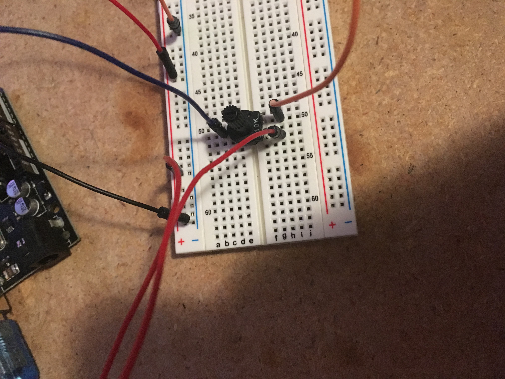
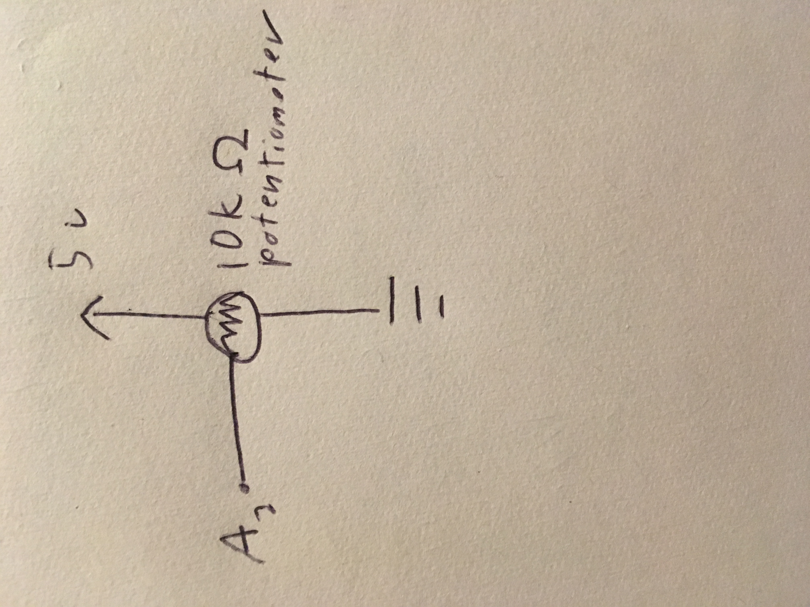

Tre's Assignment 6! Data logging

This week, I used my arduino to make a graph on a website according to output from a potentiometer
Circuitry and Schematic

Here is what my breadboard and arduino looked like by the end of the project. The arduino is reading analog input from the potentiometer from the A0 pin and there are also wires for 5v power and ground to the potentiometer. This can be seen clearly through the schematic below
Code and Final Operation
Here is the arduino code that reads the analog input
// Reads data from a potentiometer and outputs it to the console
void setup() {
Serial.begin(9600); // sets up serial print
pinMode(A0, INPUT); // sets up pin
}
void loop() {
int pot = analogRead(A0); // reads analog input
Serial.println(pot); // prints input to serial
delay(200); // delays readings
}
Here is the javascript code to make it actually read the serial output and print it as a graph on a website.
var serial; // variable to hold an instance of the serialport library
var portName = "/dev/cu.usbmodem14101"; //rename to the name of your port
var datain; //some data coming in over serial!
var xPos = 0;
function setup() {
serial = new p5.SerialPort(); // make a new instance of the serialport library
serial.on("list", printList); // set a callback function for the serialport list event
serial.on("connected", serverConnected); // callback for connecting to the server
serial.on("open", portOpen); // callback for the port opening
serial.on("data", serialEvent); // callback for when new data arrives
serial.on("error", serialError); // callback for errors
serial.on("close", portClose); // callback for the port closing
serial.list(); // list the serial ports
serial.open(portName); // open a serial port
createCanvas(1200, 800);
background(0x08, 0x16, 0x40);
}
// get the list of ports:
function printList(portList) {
// portList is an array of serial port names
for (var i = 0; i < portList.length; i++) {
// Display the list the console:
print(i + " " + portList[i]);
}
}
function serverConnected() {
print("connected to server.");
}
function portOpen() {
print("the serial port opened.");
}
function serialError(err) {
print("Something went wrong with the serial port. " + err);
}
function portClose() {
print("The serial port closed.");
}
function serialEvent() {
if (serial.available()) {
datain = Number(serial.readLine());
console.log(datain);
}
}
function graphData(newData) {
// map the range of the input to the window height:
var yPos = map(newData, 0, 255, 0, height);
// draw the line in a pretty color:
stroke(255, 0, 80);
line(xPos, height, xPos, height - yPos);
// at the edge of the screen, go back to the beginning:
if (xPos >= width) {
xPos = 0;
// clear the screen by resetting the background:
background(0x08, 0x16, 0x40);
} else {
// increment the horizontal position for the next reading:
xPos++;
}
}
function draw() {
graphData(datain);
}
Here is the final result: